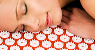

Шакти-мат
Теперь Шакти-мат приходит и в Россию!
Шакти-мат – специальный коврик для аккупунктурного массажа и йоги.
Воздействие иголок Шакти-мата повторяет эффект иглоукалывания и аккупрессуры. Расположение иголок воспроизводит рисунок Шри-янтры, что позволяет гармонизировать процесс воздействия и выстроить потоки энергии.
- возрастает активность
- наступает глубокое расслабление
- гармонизуруются потоки энергии
- повышается выносливость организма
- омоложение, повышение тургора кожи
- снимается синдром усталости, стресса
Шакти-мат 1680 руб.
Заказать- 
Шакти-мат очень прост в использовании (дома, в йога студии, на работе, на отдыхе). Не имеет противопоказаний и ограничений по возрасту. Может использоваться всеми членами вашей семьи.
- 1.Расположите Шакти Мат на полу или на кровати.
- 2.Приготовьте подушку, чтобы дать опору и расслабление шее.
- 3.Снимите одежду, чтобы ваша кожа непосредственно касалась мата.
- 4.Сядьте перед матом и медленно опускайтесь вниз, чтобы достичь полного контакта всех точек акупунктуры с иголками мата.
- 5.Убедитесь, что вся ваша спина контактирует с иголками. Если спина изогнута, положите подушку под колени.
- 6.Закройте глаза полотенцем или повязкой для глаз для тотального расслабления ума.
Мы рекомендуем для тех, кто использует мат в первый раз, лежать около 25-30 минут. Впоследствии, это время может быть продлено до часа и более за одну сессию.
Мы рекомендуем использовать Шакти мат ежедневно для оптимального результата.
Упаковка Шакти-мата включает инструкцию по эксплуатации.